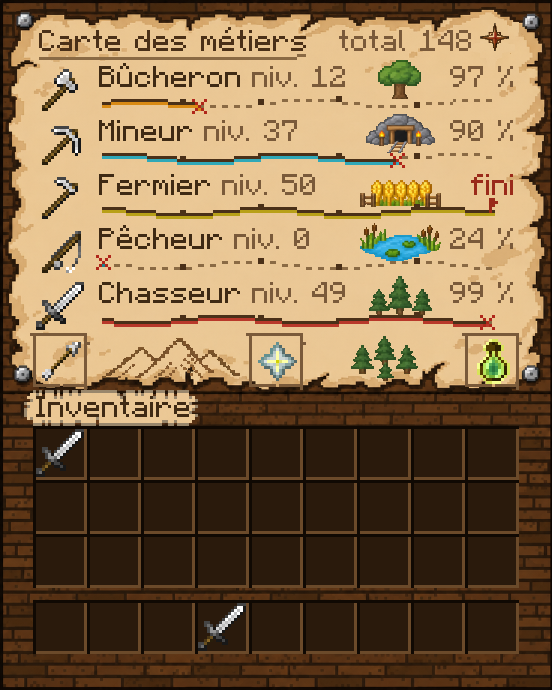
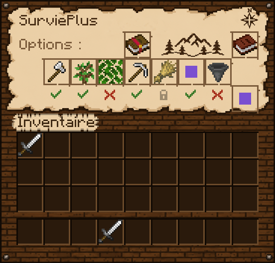
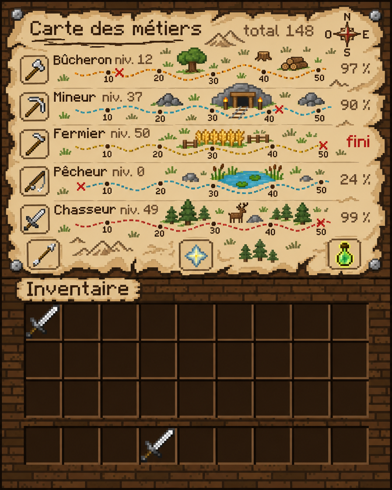
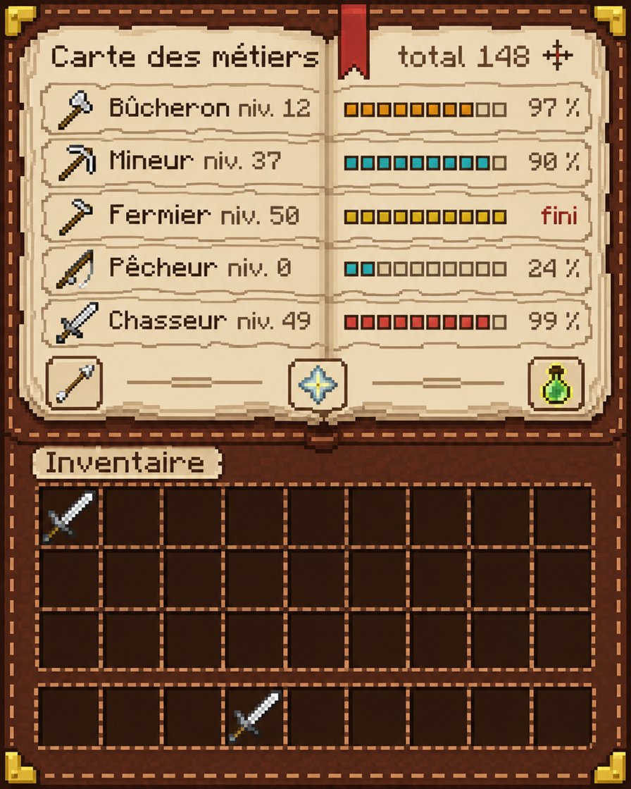
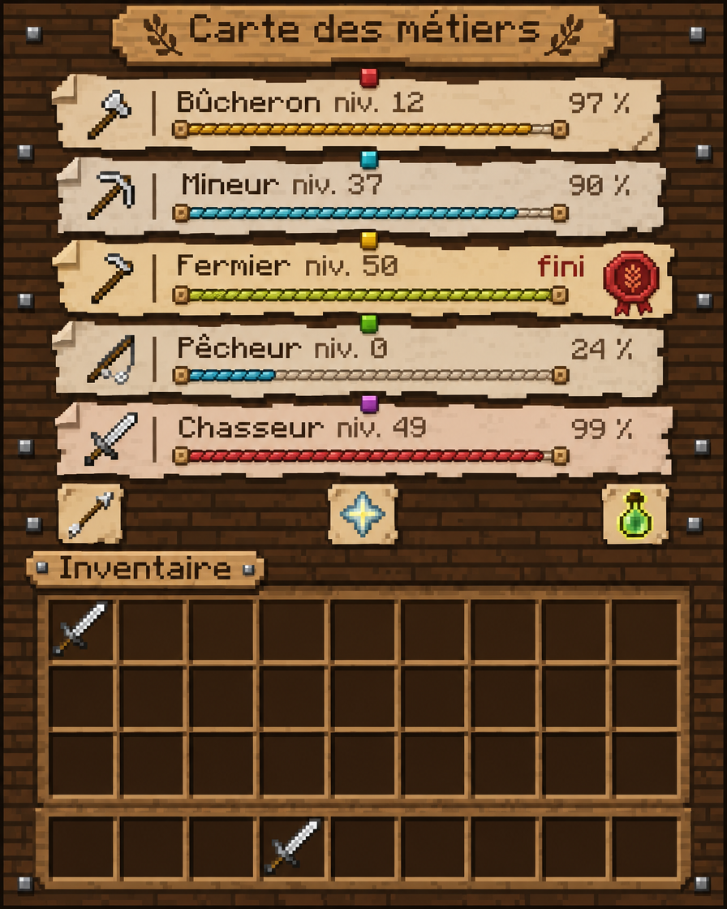
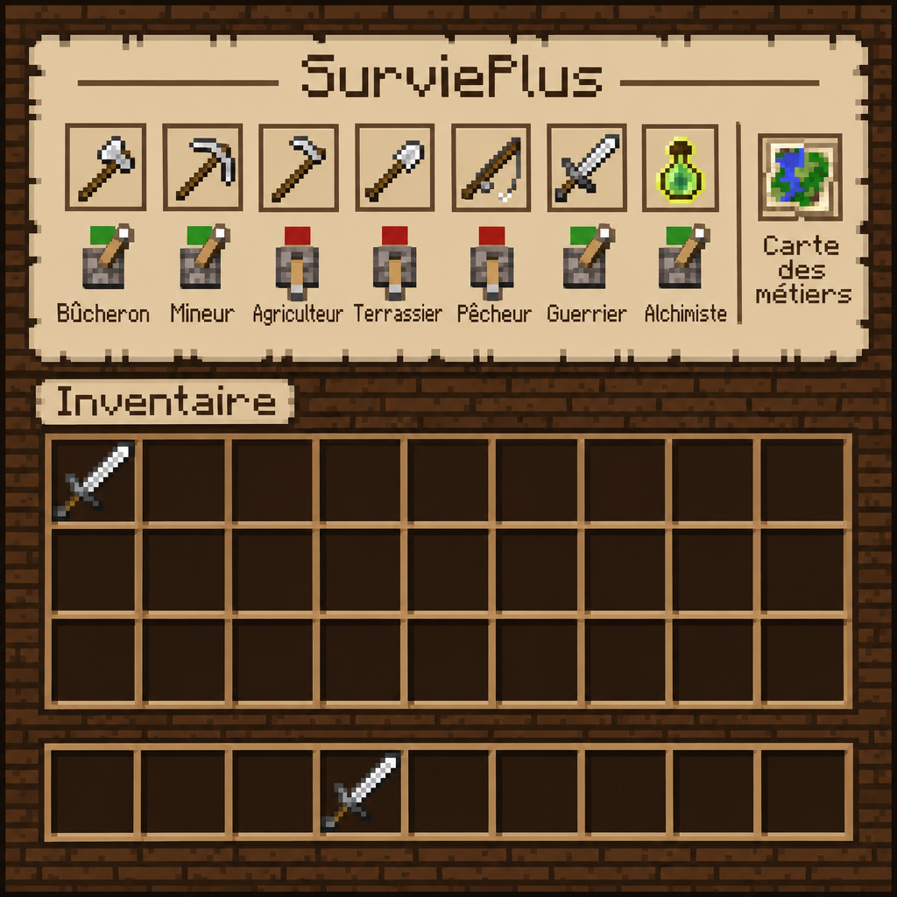
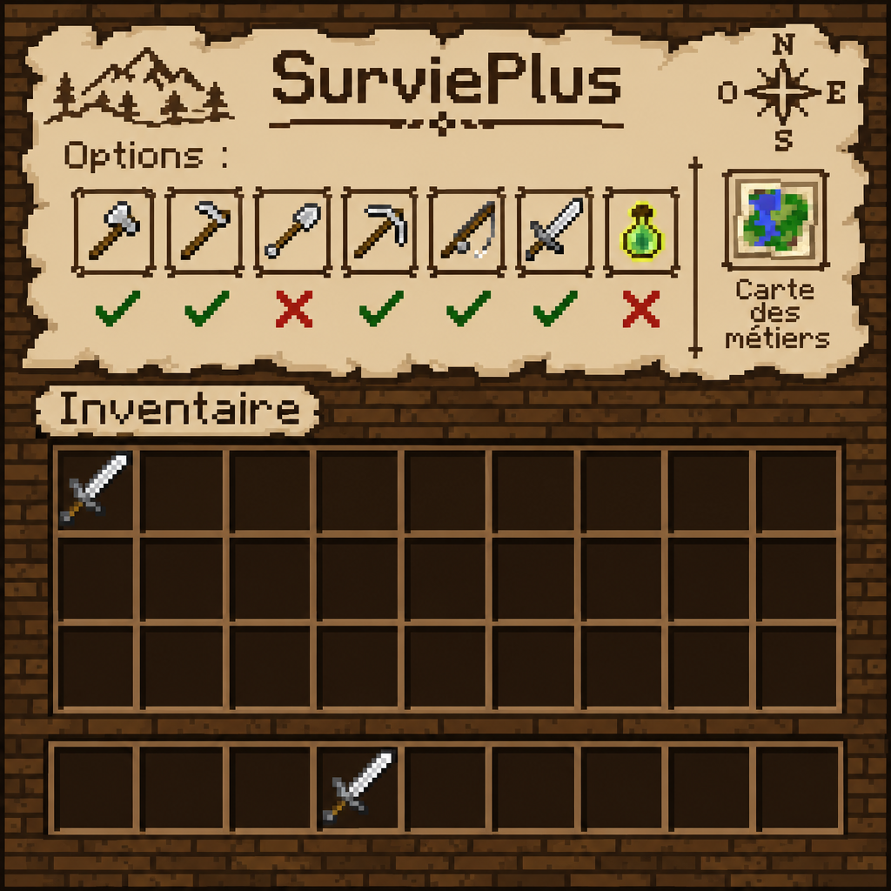

SurviePlus : pistes pour les menus, générées avec Higgsfield
En haut, le résultat dans le menu. En dessous, les planches d'idées qui ont servi à choisir. Les objets et le texte en jeu restent ceux du client.
Résultat : les images Higgsfield dans le menu (rendu du plugin)

/metiers · Carte illustréeFond, boussole et décors générés par Higgsfield, posés au pixel près ; le texte, les chemins et les cases sont ajoutés par le plugin. Le chemin va maintenant du niveau 0 au niveau 50 ; le % à droite reste celui du niveau en cours.

/sp · Coches à l'encreCoche verte = actif, croix rouge = coupé, cadenas = pas encore débloqué. Le lit (sommeil partagé) passe en bas à droite. Les carrés violets remplacent le coffre et le lit, que l'aperçu ne sait pas dessiner.
/metiers

A · Carte illustréeMême idée, en plus vivant : un petit décor par métier (arbre, entrée de mine, champ, mare, forêt), des jalons sur le chemin, une rose des vents. En jeu, les chiffres 10/20/30 ne tiendront pas dans une ligne de 18 px : il resterait des points.

B · Carnet d'aventurierLivre ouvert en cuir cousu, barres en petits carrés, marque-page rouge. Le plus lisible des trois.

C · Tableau de la guildeUne note épinglée par métier, barre en corde, sceau de cire quand le métier est fini.
/sp

A · LeviersUn levier levé ou baissé sous chaque option. Les noms sous les cases sont inventés par l'IA et ne rentreront pas en jeu (une case fait 18 px) : on garderait les noms au survol.

B · Coches à l'encreUne coche verte ou une croix rouge sous chaque option, sur la carte déchirée. Reste dans le style actuel.